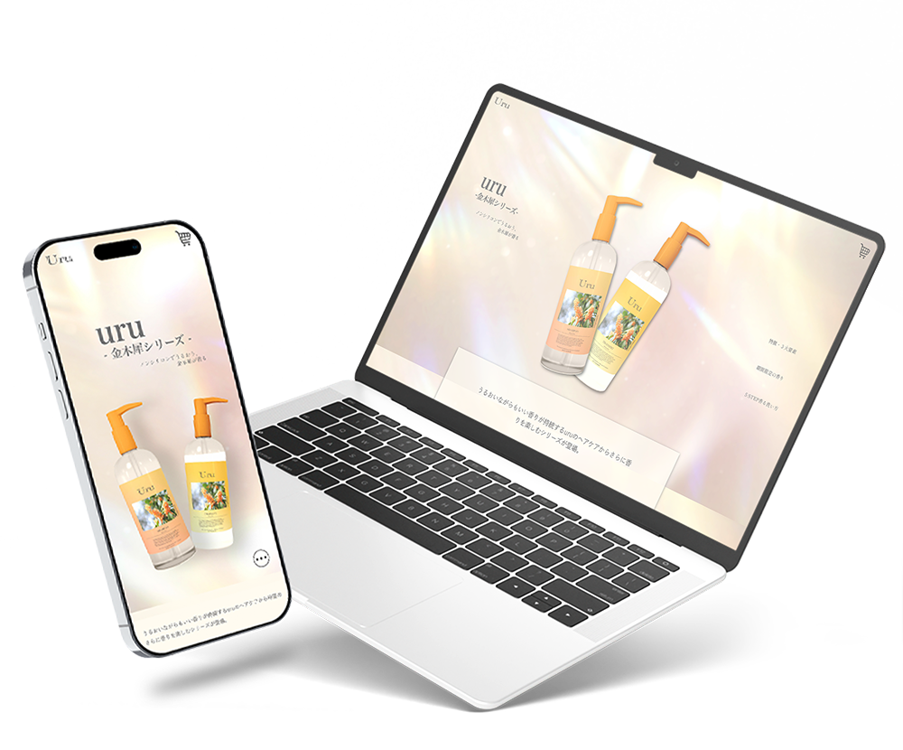
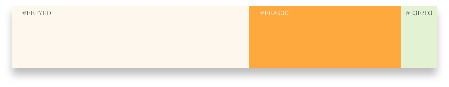
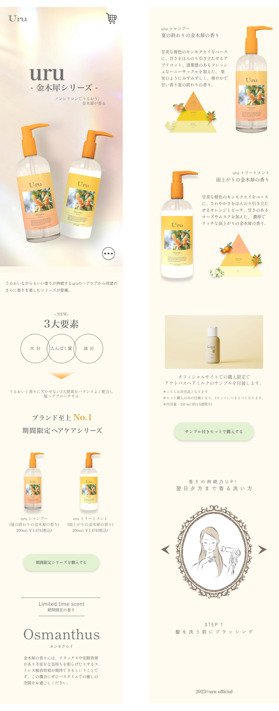

Uru Osmanthus Series
Type: LP
Website
ヘアケア期間限定商品のテーマに架空のLPを制作しました。全体的に爽やかなベースカラーで金木犀をイメージするカラーをメインに制作しました。
対応デバイス
PC・モバイル
ターゲット
季節シリーズの香りでLPを訪れた20代〜30代女性
目的
期間限定での販売促進
情報設計
メニューボタンを下に配置することでユーザーの操作性の向上を目的としております。またPC版ではメニューを右に配置することで目的のページへ飛びやすくするため設計しました。ボタンは奥行きを出すことでクリックを誘導を促しております。
デザイン
メインビジュアルではヘアケア商品でインパクトを残す目的で大きめに配置し、キャッチコピーでターゲットに訴求したデザインにしました。金木犀を感じ取れる配色と、背景には潤いをイメージするペールトーンで清潔感のある艶やかな背景を採用しました。香りが漂うなイメージで商品関連にはふわっとした動きをつけております。全体的にカラーのメリハリやシャドウでの奥行きのあるデザインに仕上げております。

制作範囲・期間
企画、ワイヤーフレーム：2日デザイン：1.5日コーディング：3日
使用ツール
Illustrator / Photoshop / XD / Dreamweaver /WordPress
